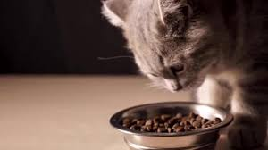
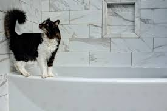
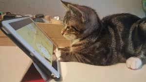
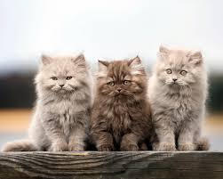
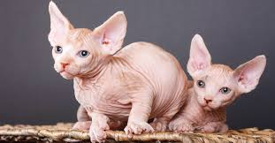
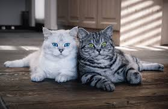

1. Харчування та правильна гідратація
Збалансований раціон — фундамент довголіття кішки. Коти за своєю природою є облігатними хижаками, що означає, що їхній організм пристосований отримувати поживну цінність переважно з м'яса. Обирайте готові корми супер-преміум або холістік класу, де на першому місці в складі вказано дегідратоване або свіже м'ясо, а не злаки.

Особливу увагу приділяйте питному режиму. Коти еволюційно звикли отримувати вологу з їжі, тому вони майже не відчувають спраги, поки не настане критичне зневоднення. Розставляйте миски з водою в різних кімнатах подалі від їжі та лотка — це стимулює інстинкт дослідження та змужує пити більше. Ідеальним рішенням є спеціальний фонтанчик-поїлка.
2. Гігієнічний календар та догляд за тілом
Регулярний догляд допомагає виявити проблеми зі здоров'ям на ранній стадії. Особливо це стосується довгошерстих порід, у яких за відсутності вичісування під шерстю формуються ковтуни, що стягують шкіру та викликають дерматити.

| Процедура | Періодичність (короткошерсті) | Періодичність (довгошерсті) | Важлива примітка від ветеринара |
|---|---|---|---|
| Вичісування шерсті | 1 раз на тиждень | 3-4 рази на тиждень | У період ліньки (весна/осінь) процедуру проводять щодня. |
| Обрізання кігтів | Кожні 2-3 тижні | Кожні 2-3 тижні | Зрізайте лише прозорий кінчик кігтя, щоб не зачепити судину. |
| Чищення вух та очей | Огляд щотижня | Огляд щотижня | Використовуйте лише спеціальні лосьйони, ніяких спиртових розчинів. |
| Чищення зубів | 1-2 рази на тиждень | 1-2 рази на тиждень | Запобігає утворенню зубного каменю та втраті зубів у віці від 5 років. |
3. Психологічний комфорт та організація простору
Для котів надзвичайно важлива так звана «вертикальна територія». У дикій природі вони контролюють простір з висоти дерев, тому в квартирі їм життєво необхідні високі полички, підвіконня або великі ігрові комплекси-стовпчики. Забезпечте кішку мінімум двома різними кігтеточками (горизонтальною та вертикальною) для збереження меблів.

Ніколи не карайте кота фізично — вони не пов'язують покарання зі своєю дією, а лише починають боятися господаря. Проблеми з поведінкою (наприклад, агресія чи ігнорування лотка) майже завжди пов'язані зі стресом, хворобою або нудьгою. Приділяйте мінімум 15-20 хвилин щодня активним іграм з іграшками-вудками.
4. Особливості догляду залежно від типу породи
Універсального підходу до котів не існує. Екзотичні та селекційні породи мають унікальні фізіологічні характеристики, які вимагають особливих дій від власника.
Довгошерсті гіганти (Мейн-куни)

Окрім щоденного чесання металевим гребнем, цим котам потрібна паста для виведення шерсті зі шлунку (мальт-паста). Оскільки вони ковтають багато волосків, у шлунково-кишковому тракті формуються волосяні кульки, що можуть викликати непрохідність. Також через велику вагу мейн-кунів не можна годувати звичайними мисками на підлозі — їхні підставки мають бути трохи піднятими, щоб не псувати поставу та суглоби.
Безшерсті породи (Сфінкси)

Повна відсутність шерсті змінює правила догляду на 180 градусів. Шкіра сфінксів виділяє захисний шкірний жир. У звичайних котів він вбирається шерстю, а у сфінксів залишається на тілі у вигляді коричневого нальоту. Тому їх потрібно купати спеціальним м'яким шампунем кожні 1-2 тижні або регулярно протирати дитячими вологими серветками без спирту. Також сфінкси бояться протягів, легко застуджуються та потребують домашнього одягу взимку.
Породи зі щільним підшерстям та короткою шерстю (Британці, Сіамці, Бенгали)

У британських та сіамських котів дуже потужне або специфічне хутро. Поширена помилка — чесати їх пуходеркою з гострими металевими зубцями, яка вириває живий підшерсток і псує структуру плюшевої шубки. Для них використовують м'які гумові щітки або рукавички, які збирають відмерлі волоски за рахунок статики, роблячи легкий масаж для покращення кровообігу.